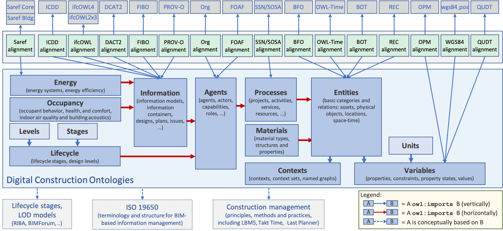

Digital Construction Ontologies (DiCon)
|
This version |
0.5 (horizontal and vertical segmentation) |
|
Previous version |
|
|
Status |
Ontology Specification Draft |
|
Editor |
Seppo Törmä |
Terminology for the representation of digitalized construction and renovation processes
Digital Construction Ontologies (DiCon) act as an enabler for the semantic interoperability between systems in the construction and renovation domain. They define the basic terms related to built assets, building design, construction project planning, and construction planning, including the agents, resources and spatio-temporal aspects. The definitions rely heavily on standards (ISO 19650 BIM/IM, ISO 16739-1 IFC, ISO/IEC 21838-2 BFO and ISO 21597-1 ICDD) and on established ontologies (such as OWL-Time, PROV-O and SSN/SOSA). The correspondances of Digital Construction Ontologies with other ontologies are provided explicitly in separate alignment modules.
The specific objective is to extend the representation to cover digitalized construction processes. Digital technologies are increasingly used in all stages of construction lifecycle, from scanning, building information modeling and procurement to supply-chain management and construction management. Mobile devices, sensors and imaging solutions provide a flood of instantaneous data from the project execution. The variety, volume, and velocity of digital information are growing, which calls for automatization of information sharing between tasks and systems, since manual processing steps are becoming increasingly restrictive bottlenecks. Digital Construction Ontologies are designed to provide a common terminology needed for machine-to-machine information flows.
Digitalized construction projects can employ a wide range of task-specific point solutions that can significantly enhance the productivity and quality of individual tasks. However, the improvement of overall construction productivity depends crucially on what happens between the tasks: how the information produced in one task is utilized in other tasks. By improving the semantic interoperability, the Digital Construction Ontologies are an enabler for smoother information sharing and eventually higher productivity and quality of construction and renovation projects.
Overview of ontology modules and alignments
DiCon is modularized using the vertical and horizontal segmentation approach of the Semantic Sensor Network Ontology. In the vertical dimension, a new module imports the previous one and deepens the representation of the underlying domain by defining additional subclasses, properties, restrictions, or alignments (therefore, alignment is always vertical segmentation). In the horizontal dimension, a new module broadens the domain by defining classes complementary to the previous ontology as well as properties to connect them to the previous concepts.
In the vertical dimension, the new module should support selected use cases better, having perhaps a narrower user base when compared to the previous module, while horizontal segmentation should extend the set of supported use cases, therefore broadening the potential user base.
In the diagram below, the blue rectangles represent the modules of DiCon (the light-blue ones are vocabularies), green boxes are alignment modules, and the grey boxes at top are external ontologies. The vertical import relations are shown with blue arrows are horizontal import with red arrows. The direction of an arrow is always from the importing module to the imported module (the owl:imports is in the module at the base of the arrow).
Ontology modules at https://w3id.org/digitalconstruction/0.5/
Digital Construction Ontologies contain three kinds of modules: (1) ontologies contain class and property definitions, (2) vocabularies define individuals based on the classes defined in the ontologies, and (3) alignment modules contain alignment axioms that connect terms of Digital Construction Ontologies to external ontologies. All references to external ontologies are in the alignment modules.
| Ontology namespace | Prefix | Description | ||
|---|---|---|---|---|
| Ontologies | ||||
| Contexts | https://w3id.org/digitalconstruction/0.5/Contexts# | dicc: | Multi-contexts data: planned/actual, as-designed/as-built, levels of detail | |
| Variables | https://w3id.org/digitalconstruction/0.5/Variables# | dicv: | Objectified properties for time varying values, constraints and value metadata | |
| Entities | https://w3id.org/digitalconstruction/0.5/Entities# | dice: | Basic categories with identifiers, classifications, breakdowns, and groupings | |
| Processes | https://w3id.org/digitalconstruction/0.5/Processes# | dicp: | Activities and resources, resource assignments, and objects of activities | |
| Agents | https://w3id.org/digitalconstruction/0.5/Agents# | dica: | Actors, stakeholders, roles, legal persons, capabilities, capacities | |
| Information | https://w3id.org/digitalconstruction/0.5/Information# | dici: | Information content entities, information containers, designs, plans, events, and issues | |
| Materials | https://w3id.org/digitalconstruction/0.5/Materials# | dicbm: | Building materials, material object structures, material properties and material bacthes | |
| Occupancy | https://w3id.org/digitalconstruction/0.5/Occupancy# | dicob: | Occupant behavior, comfort, safety and health; indoor air quality and building acoustics | |
| Lifecycle | https://w3id.org/digitalconstruction/0.5/Lifecycle# | dicl: | Evolution of information through LOD levels and over the construction lifecycle | |
| Energy | https://w3id.org/digitalconstruction/0.5/Energy# | dices: | Energy efficiency including energy systems | |
| Vocabularies | ||||
| Units | https://w3id.org/digitalconstruction/0.5/Units# | dicu: | Vocabulary of units and quantity kinds specific to construction and renovation | |
| Levels | https://w3id.org/digitalconstruction/0.5/Levels# | diclvl: | Vocabulary of LOD levels based on established frameworks in EU, IT, UK and USA | |
| Stages | https://w3id.org/digitalconstruction/0.5/Stages# | dicstg: | Vocabulary of lifecycle stages based on the frameworks of ISO 22263, RIBA, and HOAI | |
| Alignments | ||||
| Alignment/BFO | BFO | http://purl.obolibrary.org/obo/ | obo: | Fundamental categories (ISO/IEC 21838-2) |
| Alignment/QUDT | QUDT | http://qudt.org/2.1/schema/qudt | qudt: | Quantities, units of measurement, dimension vectors, and datatypes |
| Alignment/OPM | OPM | http://www.w3id.org/opm# | opm: | Objectified property states with value calculation |
| Alignment/WGS84 | wgs84_pos | http://www.w3.org/2003/01/geo/wgs84_pos# | geo: | Basic geolocation for spatially-located things |
| Alignment/IFC | ifcOWL | https://standards.buildingsmart.org /IFC/DEV/IFC4/ADD2_TC1/OWL |
ifcowl: | BIM models based on IFC4 ADD2 TC1 (ISO 16739-1:2018) |
| Alignment/BOT | BOT | https://w3id.org/bot# | bot: | Building Topology Ontology |
| Alignment/OWLTime | OWL-Time | https://www.w3.org/2006/time/ | time: | Time intervals and time instants |
| Alignment/FOAF | FOAF | http://xmlns.com/foaf/spec/ | foaf: | Agents and social networks |
| Alignment/Org | Org | https://www.w3.org/TR/vocab-org/ | org: | Organizations, posts, roles |
| Alignment/PROV | PROV-O | https://www.w3.org/TR/prov-o/ | prov: | Origin or information |
| Alignment/SSN | SSN SOSA |
http://www.w3.org/ns/ssn/ http://www.w3.org/ns/sosa/ |
ssn: sosa: |
Sensor data and sensor systems |
| Alignment/ICDD | ICDD | https://standards.iso.org/ iso/21597/-1/ed-1/en/Container# |
ct: | Information Container for Linked Document Delivery (ISO 21597-1) |
| Alignment/REC | RealEstateCore | https://w3id.org/rec/core/ | core: | Control over buildings and development of services to them for Smart City interaction |
| Alignment/Saref | Saref Core Saref4Bldg |
https://saref.etsi.org/core/ https://saref.etsi.org/saref4bldg/ |
saref: s4bldg: |
Sensor data and sensor systems, in buildings |
Main characteristics
Support for relevant standards in the AEC domain - Firstly, DiCon ontologies are aligned with ifcOWL (the ontology version of the Industry Foundation Classes - standardized as ISO 16739) which means that the other relevant information - for instance, about stakeholders, activities, information entities, or sensor observations - can be associated with building objects and spacial entities directly exported from BIM tools. Secondly, DiCon provides a formalization of the central concepts of ISO 19650 that specifies the principles of information management in BIM-based projects. The definitions range from built assets, appointments and project teams to information models consisting of a federation of information containers. Thirdly, the information-related concepts of DiCon are compatible with the Container ontology of ISO 21597 Information Container for Linked Document Delivery that enables the exchange of packages of interlinked datasets across parties.
Fundamental categories based on a top-level ontology - Since DiCon covers a wide range of concepts – physical entities, spatial entities, information entities, events, processes, properties, roles, capabilities, etc. – there is a need for generalized concepts or higher-level categories as one method to interrelate different domains of information. Instead of ad hoc generalizations, a standard and widely-used top-level ontology Basic Formal Ontology (ISO/IEC 21838) is used as the source of fundamental categories. The secondary aim is to advance compatibility with major ontology efforts aligned with BFO such as Industrial Ontologies, European Materials Modeling Ontology, and Open Energy Ontology. BFO is based on ontological realism - according to which ontology represents entities in the world - that better promotes interoperability than ontologies that allow cultural or mental concepts with more diverse interpretations. The key areas where DiCon differs from BFO are the representations for artifacts and properties.
Support for the evolution of information - Information will be accumulated, refined, and changed during the execution of construction and renovation projects. DiCon supports the evolution of information with two different mechanisms. Firstly, objectification of properties – aligned with SOSA/SSN, Saref Core, QUDT and the RDF reification terminology – is used for the small-scale evolution, e.g., for values changing over time as a result of sensor observations. Objectification also enables the representation of other metadata about properties: quantity kinds, units of measure, and property definition entities. Secondly, the large-scale evolution is based on the named graphs of an RDF Dataset that are used to implement the ISO 19650 information containers. This enables the storage and management of alternative renovation scenarios, different LOD levels of BIM models, versions of operational plans, entity organizations such as breakdown structures, and so on.
Multiple identifiers and classifications - All DiCon entities can be labeled with identifiers and classifications (inspired by the gist ontology). According to the Linked Data principles, every independent entity has a URI as its main and retrievable identifier. However, an entity can have additional identifiers in different information systems and other scopes. Identifiers can be globally unambiguous such as a GUID, or locally unambiquous, such as a room number in a building (where the building defines the scope of the identifier). Likewise, since different classification systems in the construction sector are used in different geographical regions and organizations, DiCon supports the flexible labeling of entities with categories based on the needs of a project. The goal of DiCon is to avoid duplicating information that is already in classification systems; after all, classifications are complementary to ontologies in the sense that they capture the variety in the domain with an extensive set of detailed classes (possibly with class-specific attributes), while ontologies represent the complexity in it with a compact set of classes, each with a distinct set of relations to other classes.
Overview of the classes
The following diagram illustrates the scope of Digital Construction Ontologies by showing the most important entity classes and their subclass relations. The various property classes are not included in the figure. The diagram is drawn in the Chowlk notation.

Documentation and examples
Information models and information containers
Objectified properties, property states and constraints
Examples of use scenarios of Digital Construction Ontologies
Project initiation
Renovation scenarios
Flowline scheduling
Alphabetical index of the terms
Changes from version 0.3
Contributing projects
BIM4EEB - BIM-based toolkit for efficient renovation of residential buildings (European Union's H2020 research and innovation programme, grant N. 820660) |
Diction - Development of shared situational awareness in construction projects (Business Finland, Collaborative research project 2018-2020) |
||||||||||||||||||||||||||||||||
| Contributing organizations | |||||||||||||||||||||||||||||||||
|---|---|---|---|---|---|---|---|---|---|---|---|---|---|---|---|---|---|---|---|---|---|---|---|---|---|---|---|---|---|---|---|---|---|
|
|
||||||||||||||||||||||||||||||||
| Contacts | |||||||||||||||||||||||||||||||||
| Seppo Törmä (VisuaLynk) | Yuan Zheng (Aalto University) | ||||||||||||||||||||||||||||||||
License

Last modified: Sat Sep 11 10:56:05 EEST 2021